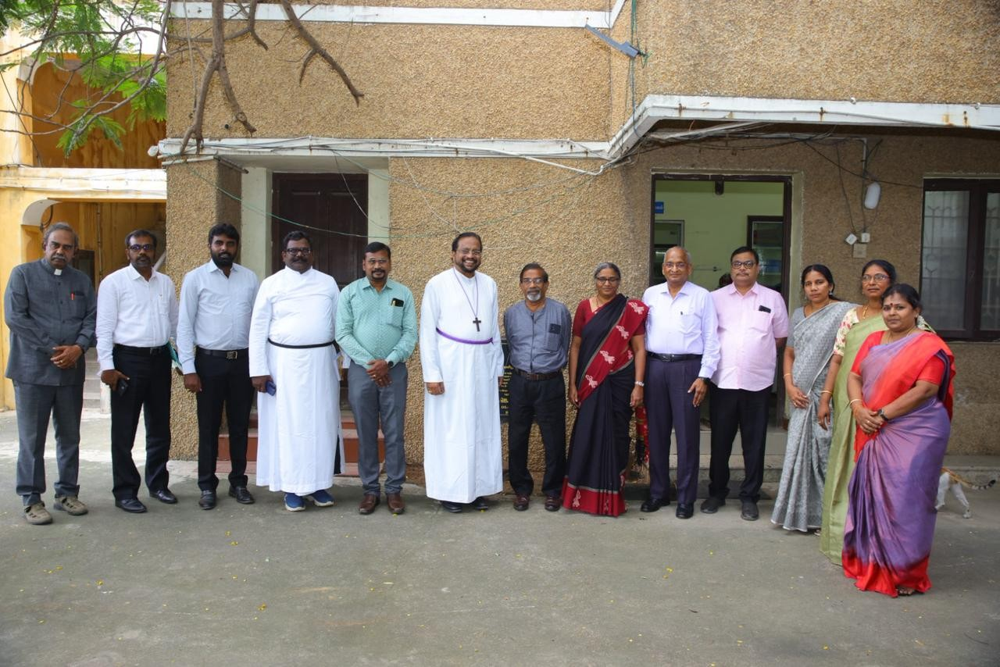
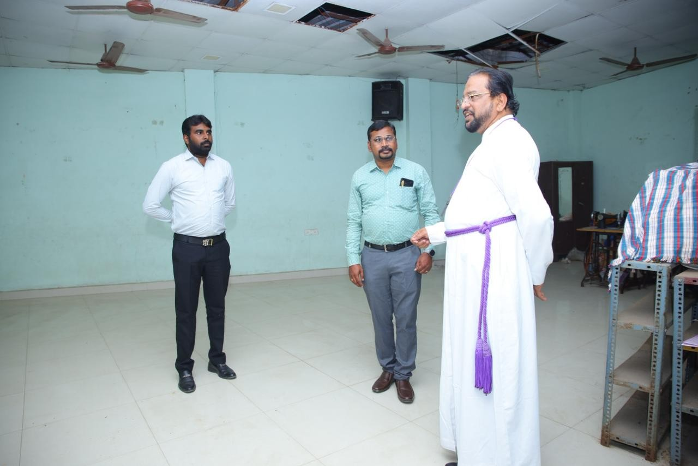

MCCSS
An ecumenical body founded in 1965 by Bishop Leslie Newbigin, open to all.
Who we are
MCCSS was founded in 1965 by Bishop Leslie Newbigin of the CSI Diocese of Madras as an ecumenical organisation of 13 mainline church denominations and 4 Christian service organisations.
The CSI Bishop of Madras and the Catholic Bishop of Madras Diocese serve as Joint Chairpersons. Our present Chairperson is Rt. Rev. A. Paul Francis Ravichandran. Registered in 1973 under the Societies Registration Act, 1860.
Services open to all — no religion, caste or creed barrier

Leadership